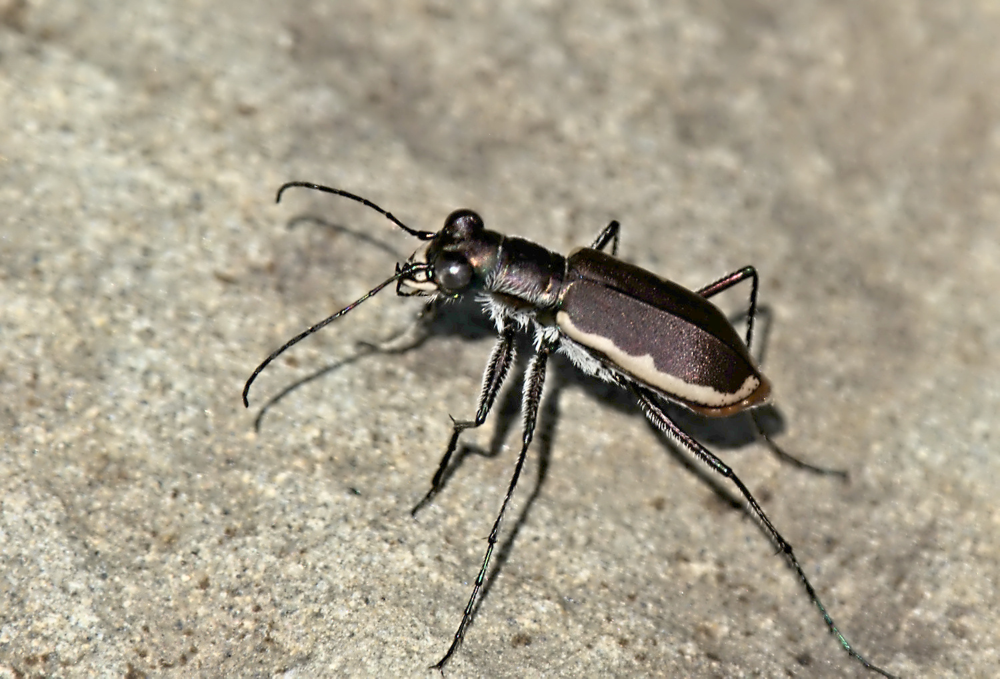

Cobblestone Tiger Beetle (photo: your name / date or iNaturalist observer)
Identification
- Medium-sized (11–14 mm), dark chocolate-brown to black with metallic green/blue reflections.
- White maculations reduced or absent; body robust.
- Restricted to cobblestone river shores; short flights.
- Endangered in Canada (COSEWIC); very rare in NB.
Habitat in New Brunswick
Limited to cobblestone/gravel river shores and islands in large rivers (e.g., Grand Lake region). Requires clean, fast-flowing water and minimal vegetation.
Flight Season in NB
June to August (summer only; peak July). Short adult activity period.
Distribution & Notes
Known from very few sites in New Brunswick; federally endangered. Sensitive to habitat disturbance (dams, pollution, shoreline development). High conservation priority.